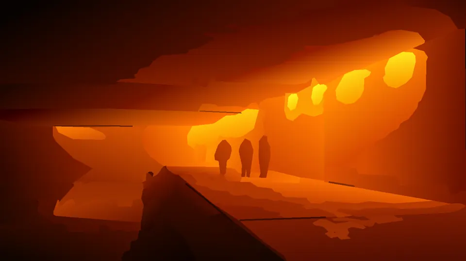

Worldtext / design language
Read the rules of a place.
Flood marks, repairs, stairs and materials turn atmosphere into a history. Let a district’s customs decide what can happen at its thresholds.
Carry forward one material rule, one social rule and one recurring action.